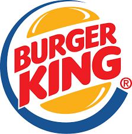

Burger King
Opčenito
Burger King je jedan od najpoznatijih lanaca brze hrane na svijetu, poznat prvenstveno po svom ikoničnom proizvodu – Whopper. Slogan "Have it your way" (na hrvatskom: "Po tvom ukusu") savršeno opisuje filozofiju Burger Kinga: personalizirana hrana, snažan okus i ponuda koja se izdvaja od konkurencije.
Burger King je osnovan 1954. godine u Miamiu, Florida, pod imenom Insta-Burger King. Osnovali su ga James McLamore i David Edgerton, a vrlo brzo su razvili i svoj prvi roštilj sustav za pripremu mesa – "Insta-Broiler", koji je kasnije zamijenjen s "Flame Broilerom", sustavom pečenja mesa na otvorenom plamenu, po kojem je Burger King i danas prepoznatljiv. Godine 1957. na jelovnik je uveden Whopper, burger koji je postao njihov zaštitni znak i koji je i danas jedan od najprodavanijih proizvoda.
Iako je Burger King najpoznatiji po Whopperu, njegova ponuda obuhvaća: Klasične burgere: Cheeseburger, Double Cheeseburger, Bacon King, Pileći proizvodi: Chicken Royale, Chicken Nuggets, Crispy Chicken, Doručak: sendviči s jajima, kavom i palačinkama, Vegetarijanski proizvodi: Plant-Based Whopper i Veggie Nuggets, Dodaci: pomfrit, onion rings (prstenovi luka), salate i Deserti i pića: sladoled, shakeovi, Coca-Cola, kava. Njihovi proizvodi razlikuju se po intenzivnijem okusu mesa jer se peku na plamenu, a ne prže, što daje karakterističan miris i teksturu.
Whopper je veliki burger koji sadrži 100% goveđe meso, svježu salatu, rajčicu, kiseli krastavac, luk, kečap i majonezu u mekanom pecivu sa sezamom. Njegova veličina, bogatstvo okusa i mogućnost prilagodbe čine ga konkurencijom svakom drugom burgeru. Burger King redovito nudi varijacije Whoppera, poput BBQ Whoppera, Double Whoppera, Cheese Whoppera i sezonskih verzija.
Burger King danas ima više od 19.000 restorana u više od 100 zemalja. Njegova prisutnost u Europi, Aziji i Latinskoj Americi raste iz godine u godinu. U mnogim zemljama natječe se izravno s McDonald'som, iako se Burger King često pozicionira kao "odvažnija" alternativa – s jačim okusima i hrabrijim kampanjama. U Hrvatskoj, prvi restoran otvoren je u Zagrebu 2014. godine. Danas ih ima u nekoliko većih gradova i često se nalaze u trgovačkim centrima i na odmorištima uz autoceste.
Burger King nudi mobilne aplikacije, samoposlužne kioske i online dostavu putem raznih platformi. Također je poznat po zabavnim i provokativnim digitalnim kampanjama, koje često uključuju izazove i promocije poput "Order a Whopper near McDonald's".
Burger King je brend koji kombinira okus, prilagodljivost i karakter. Njegovi proizvodi su prepoznatljivi, kampanje kreativne, a iskustvo kupca uvijek usmjereno na individualnost. Ako želiš burger po svom ukusu, s intenzivnijim okusom i većim izborom dodataka – Burger King ti to omogućuje.
Primjer jela u BG: